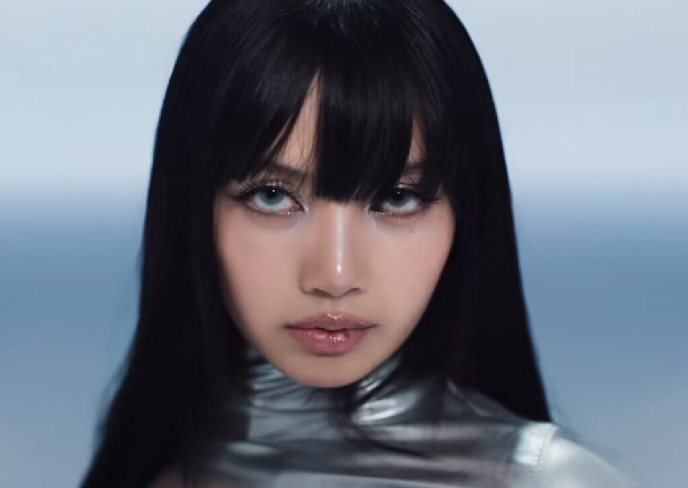

Artista
Lalisa Manoban, também conhida como Lisa, é um membro do grupo e K-Pop BlackPink. Lisa é rapper, cantora, dançarina e modela talentosa tailandesa. Lisa da BlackPink é radicada na Coreia do Sul, nasceu em 27 de março de 1997 em Bangkok, Tailândia.Lisa participa do grupo BlackPink junto com a Jennie, Jisoo e Rosé, tendo estreado nela em 2016 através da YG Entertainment(1).
